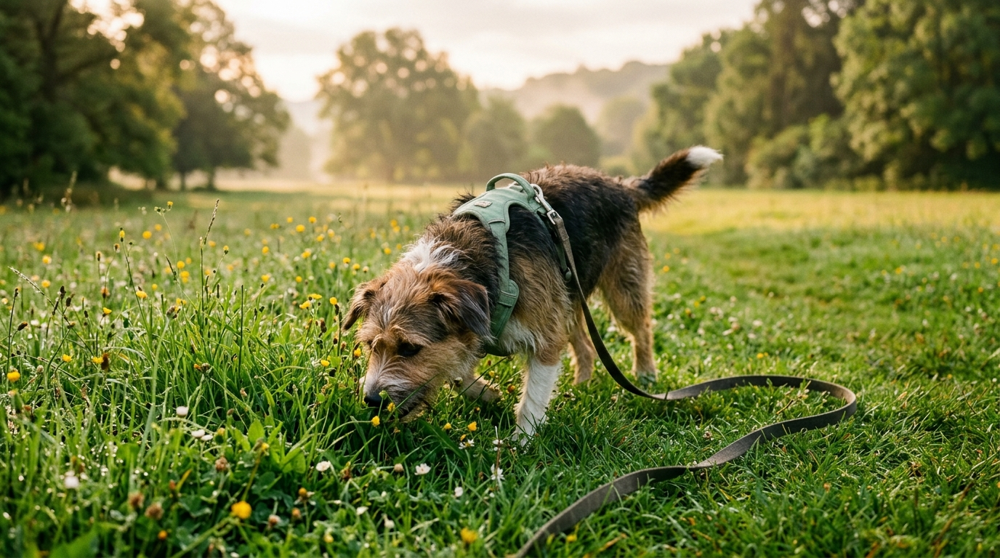

1. El superpoder de la trufa canina
Mientras que los humanos tenemos unos 5 millones de receptores olfativos, un perro cuenta con entre 200 y 300 millones. Cuando tu perro huele un árbol o una esquina del parque, está leyendo el "periódico del barrio": quién pasó por ahí, qué comió, si estaba tranquilo o asustado.
Olfatear activa la corteza cerebral, disminuye la frecuencia cardíaca y genera un cansancio mental profundo y placentero que ningún ejercicio físico repetitivo puede igualar.
2. Cómo transformar la caminata militar en un paseo olfativo
- No midas el éxito del paseo en kilómetros, sino en olfateos: Es preferible recorrer dos cuadras en 25 minutos dejando que explore cada arbusto que caminar rápido sin permitirle detenerse.
- Evita dar tirones de correa: Si se detiene a oler algo seguro, cuenta hasta 10 en silencio antes de invitarlo suavemente con tu voz a continuar.
- Varía las rutas: Cambiar de acera o visitar un parque distinto cada fin de semana ofrece olores nuevos para su mente.
3. El equipo ergonómico recomendado
4. Tres juegos de enriquecimiento ambiental que puedes hacer hoy en casa
- La toalla enrollada (Alfombra olfativa casera): Extiende una toalla vieja, esparce trocitos de premios saludables, enróllala como un taco y deja que tu perro use el hocico y las patas para desenrollarla.
- Caja de cartón buscatesoros: Guarda rollos de cartón vacíos y papel kraft arrugado dentro de una caja limpia y esconde parte de su ración diaria entre los papeles.
- Lickimat o tapete de lamido: Unta yogur natural sin azúcar (o kéfir) mezclado con puré de banano o calabaza y congélalo por 1 hora.
5. Masticación natural: el spa mental de los perros
Ofrecer masticables naturales deshidratados (como orejas de res, tráquea o nervio de toro supervisado) durante 15 a 20 minutos tres veces por semana limpia sus dientes de forma mecánica y libera serotonina y dopamina en su cerebro.
📚 Referencias Científicas y Fuentes Clínicas
- Duranton, C., & Horowitz, A. (2019). Let me sniff! Nosework induces positive judgment bias in pet dogs. Applied Animal Behaviour Science, 211, 61-66. DOI: 10.1016/j.applanim.2018.12.009.
- Kokocińska-Kusiak, A., et al. (2021). Canine Olfaction: Physiology, Behavior, and Possibilities for Practical Applications. Animals, 11(8), 2463.
- Horowitz, A. (2009). Inside of a Dog: What Dogs See, Smell, and Know. Scribner, New York.
Hoteles, parques y cafés para ir con tu perro
Descubre lugares seguros y tranquilos para pasear o descansar con tu perro.
Ver hoteles y guarderías